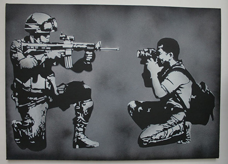

<figure>
	<br>
	<sub>Icy and Sot</sub>
</figure>	
<aside>
	<h3>ICY AND SOT</h3>
	<p>
		ICY AND SOT were born in 1985 and 1991 in Tabriz, Iran. These two young brothers slapping the walls of iranian cities with their brilliant stencil works, give an acerbic and critical look with a touch of humor they carry since their beginning in 2008. It is all about universal subjects such as peace, love, war, hate and society issues of the iranian culture. As they happen to be the street art pionners in Iran with all their bunch of graffiti friends, they are risking their lives day after day to continue their mission.<br><br>
		ICY AND SOT have been exposed in New-York, Amsterdam, Helsinki, Tehran and many other cities. It is a pleasure to welcome them at Galerie Nicolas Hugo for this exhibition ‘I RAN WITH IRAN’.<br><br>
		ICY AND SOT live and work in Tabriz and Tehran, Iran.
	</p>
</aside>
